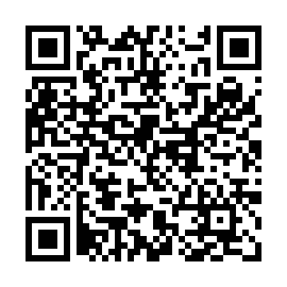

QR codes — https://joonoh991119.github.io/csnl-posters-2026
Print at 100%. On the poster, place the code at least 30 mm square with the
URL printed beside it in readable type — cameras fail often enough that the text matters.

ALL CSNL Posters 2026 https://joonoh991119.github.io/csnl-posters-2026/